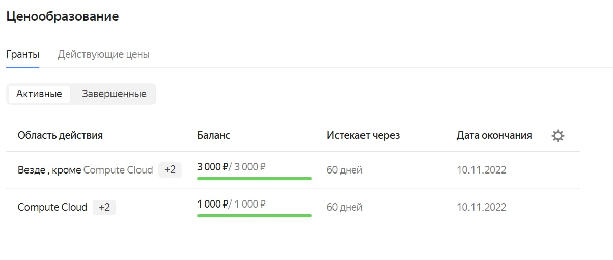

Как пользоваться Yandex SpeechKit API
Для того, чтобы перевести аудио в текст с помощью Yandex SpeechKit API, необходимо сделать следующее:
- Зарегистрироваться в Yandex Cloud
- Создать платежный аккаунт, при этом дают 4000 рублей на эксперименты
- Грант на использование нужно потратить в течении 2х месяцев 
После этого
- Склонируйте репозиторий Yandex Cloud API:
- Узнайте идентификатор каталога, к которому у вашего аккаунта есть доступ
- Для аутентификации в примерах используется IAM-токен. Получите IAM-токен здесь
- Скачайте пример аудиофайла для распознавания. Аудиофайл имеет формат LPCM с частотой дискретизации 8000.
Ссылки:
Примеры использования API v2 потокового распознавания